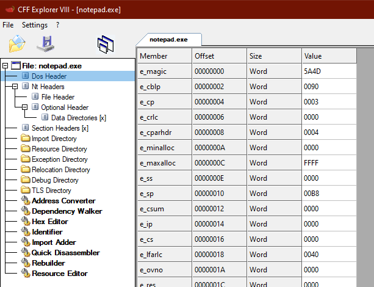

DOS Header
The MS-DOS Header is at the start of every PE file.
It identifies the file as a DOS file.
https://www.nirsoft.net/kernel_struct/vista/IMAGE_DOS_HEADER.htmlPIMAGE_DOS_HEADER dos_header = NULL;
dos_header = file_buffer;
printf("DOS header @ 0x%p \n", dos_header);
printf("\t e_magic: 0x%x \n", dos_header->e_magic);
printf("\t e_lfanew: 0x%x \n", dos_header->e_lfanew);
## Values of Interest
e_magic ◇ identifies the file as a DOS file
◇ should be 0x5a4d - ASCII for MZ - Mark Zbikowski - the original architect of MS-DOS
◇ IMAGE_DOS_SIGNATURE stores this constant
e_lfanew ◇ contains the offset to the PE header- the IMAGE_NT_HEADERS struct